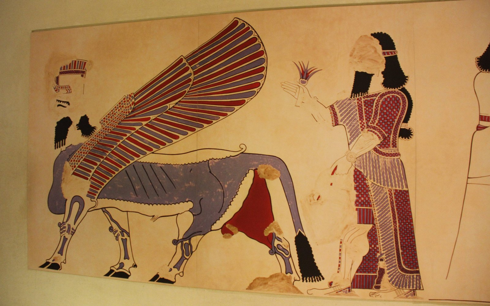
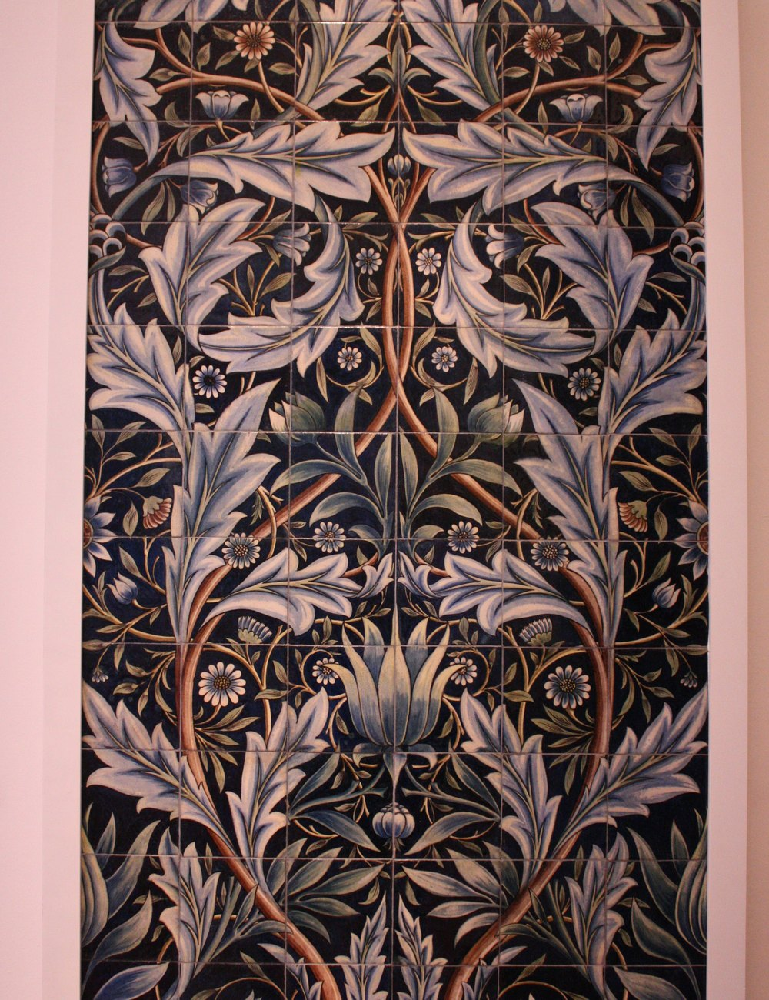

Au Cannet, Cannes-Art perpetue les techniques de la peinture decorative ancienne au service du patrimoine d'aujourd'hui.
Je travaille la matiere comme on ecrit une histoire : a la chaux et au pigment, sans solvant ni artifice. Mon engagement, c'est une peinture saine et des decors qui traversent le temps.
Cannes-Art est ne d'un attachement profond au patrimoine bati et aux savoir-faire qui le font vivre. Fresques effacees, plafonds ternis, dorures fatiguees : autant de decors qui meritent une seconde vie, executee dans le respect des techniques d'origine.
L'atelier defend une peinture naturelle — chaux, terres, pigments, colles et cires — loin des produits industriels. Une approche plus lente, plus exigeante, mais fidele a l'esprit des grands decorateurs d'autrefois.
Chaque chantier est suivi de bout en bout par une seule main, garante d'une coherence et d'une finesse d'execution que seul l'artisanat permet.

Rencontrons-nous autour de votre projet. Le premier echange et le devis sont gratuits.